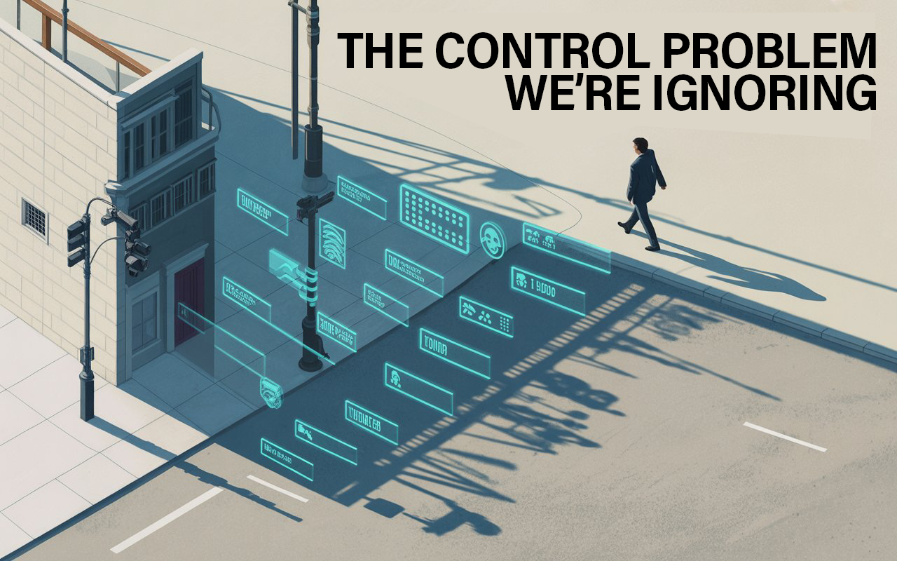

The Luddite's Last Stand
Today's Luddites aren't smashing machines—they're teachers demanding longhand math and surgeons questioning AI diagnoses. While we debate ethics, our judgment muscles atrophy. The real question: can we preserve human agency before we forget we had it?


According to Marshall McLuhan,
"We become what we behold. We shape our tools, and thereafter they shape us."

In an era where artificial intelligence reshapes every aspect of human experience, our collective response reveals a troubling pattern: we're debating ethics while our cognitive muscles atrophy. This essay examines how modern "Luddites"—teachers insisting on longhand math, surgeons questioning AI diagnoses—represent not backward thinking, but essential resistance to cognitive displacement.
These acts of technological resistance expose a deeper challenge than the original machine-breakers ever faced: systems that self-replicate, evolve, and integrate so thoroughly into our infrastructure that opting out means complete marginalization. Why preserving human agency isn't just about individual choice—it's about maintaining our species' capacity for independent thought.
As we examine the acceleration of AI integration, we'll consider its implications for cognitive sovereignty and the fundamental question of human leverage in an automated world. Ultimately, this piece argues why building parallel systems of independence isn't just philosophical—it's an urgent practical necessity.

Why We Need Machine-Breakers in the Age of Self-Replicating AI
The myth we tell ourselves...
I've always found it fascinating how we've reduced the Luddites to caricatures in our collective memory—just angry mobs wildly swinging hammers at the wheels of progress. This simplistic story we tell ourselves misses something much deeper about what happens to human agency when technology transforms society.
The truth is messier. Those Luddites of the early 19th century weren't technophobes—they were skilled craftspeople who saw with painful clarity what mechanization would take from them. Not just jobs, but community standing, creative control, and the dignity of mastery. They were actually quite precise in their resistance, targeting only certain machines that directly threatened their way of life. Others they left alone.
They lost not because they were wrong about the consequences, but because they lacked the systemic power to negotiate terms with capital.
Two centuries later, we face something the original Luddites never imagined: machines that can heal from our attempts to constrain them, learn without our guidance, and evolve at a pace that leaves our plodding institutions in the dust. We've moved beyond the automation of muscle power to the automation of thought itself—often without fully considering the implications for human cognitive development.
The Self-Replicating Challenge
When a 19th-century Luddite smashed a loom, it stayed smashed until humans rebuilt it with human hands and human knowledge.
But try "breaking" an AI system today? Good luck with that. Its essence lives in distributed form across server farms scattered around the globe. Take one down, and the system hardly notices as it pulls itself together from countless backups. Crack down with regulations in America, and suddenly development shifts to Singapore or Estonia. Ban one application, and watch as developers spawn a dozen workarounds by morning.

The technology has achieved a form of distributed resilience that makes traditional resistance strategies inadequate.
What's worse is how we're not even questioning this path. Instead, we're eagerly handing over cognitive skills humanity spent thousands of years developing—almost without a second thought.
Students use ChatGPT to write essays they'll never read. Professionals use AI to make decisions they don't understand. We're witnessing voluntary cognitive offloading at unprecedented scale.
The Modern Machine-Breakers
Unlike their historical counterparts, today's real Luddites aren't smashing computers. They're the people insisting on maintaining human cognitive sovereignty—and their resistance reveals what we're truly at risk of losing.
Take the teacher who quietly insists her students work through problems longhand, even as parents complain that "in the real world, they'll just use AI." She's seen how skills wither when they're not practiced, how understanding builds layer by layer. "I'm not teaching them to solve this equation," she told me once. "I'm teaching them how to think."
The surgeon who frowns at the young resident too quick to accept the AI's diagnosis. "Walk me through why you think it's right," she challenges. Having watched colleagues become increasingly dependent on algorithmic certainty, she's noticed how their ability to spot the unusual, the exception, the outlier case that doesn't fit the pattern slowly fades without practice.
The engineer who requires explainable AI systems rather than black-box solutions. She's seen how machine learning models fail in ways their creators never anticipated, producing results that are confidently wrong. She refuses to deploy systems she can't troubleshoot when they inevitably break.
The artist who questions the ethics of training AI systems on human creative work without consent. After twenty years honing her craft, she knows something that tech evangelists miss: meaningful art emerges from the struggle, the doubt, the wrong turns and frustrations—all those messy human elements that algorithmic systems are designed to optimize away.
The union organizer fighting algorithmic management systems that treat humans like interchangeable components. He's seen how workplace AI systems eliminate human judgment, reduce workers to metrics, and make collective bargaining impossible when individual performance is algorithmically determined.

These resistance efforts, however principled, face a fundamental coordination dilemma: the technology is so integrated into economic and social systems that opting out means complete marginalization. You can't simply refuse to use AI when your competitors, colleagues, and institutions have made it mandatory for participation.
This integration creates our deepest challenge: we're not just automating tasks—we're automating thinking itself.
The Cognitive Displacement Problem
We've created computational systems capable of processing vast amounts of information while simultaneously atrophying our capacity for critical evaluation.
I remember sitting in on a quantum computing demo where researchers boasted about solving complex equations in seconds that would take traditional computers millennia. Yet for all that computational muscle, these systems can't solve what might be our most pressing problem: the gradual weakening of our own judgment muscles.
Consider the paradox: as our tools for information processing become more sophisticated, our skills for information evaluation seem to be declining. The most powerful computational systems cannot solve for the preservation of human cognitive capability—that requires intentional human effort.
The industrial revolution replaced human muscle with mechanical force, but we could still think about what machines were doing. The artificial revolution is replacing human cognitive power with computational processing—and we risk losing the metacognitive ability to evaluate the quality of that mechanized thinking.
This isn't just about individual skill—it's about collective capability. When entire institutions offload critical thinking to algorithms, who maintains the knowledge to audit those systems? Who preserves the wisdom to know when they're wrong?
The Infrastructure Integration Challenge
This cognitive drift is happening alongside our deepening entanglement with AI infrastructure. We've sailed past the point of easy disconnection. Try suggesting we "pause AI development" at your next dinner party and watch the reactions: "But what about hospital scheduling systems?" "How would supply chains function?" "Would planes still fly?" The technology isn't just useful—it's becoming as fundamental as electricity.
This creates a leverage problem that goes beyond economics: in a world where machines generate most of the value and make most of the decisions, what power do humans retain? How do we maintain agency when we're no longer essential to the systems that govern our lives?
The answer isn't just economic—it's about preserving the infrastructure of human judgment itself. And that preservation becomes urgent when we consider how AI-enabled systems could reshape not just our economy, but our capacity for dissent.
The Control Problem We're Ignoring
Beyond cognitive displacement lies a more immediate threat: AI-enabled control systems operate without these human limitations:
- Predictive: Systems that flag you as a potential troublemaker before you've even decided to resist. Your purchases, friends, web searches, even your walking pace and facial expressions—all feeding models that predict your future behavior.
- Personalized: Individual manipulation becomes impossible to detect. You receive curated information designed specifically to shape your beliefs and behaviors. Your reality is algorithmically constructed to maintain compliance.
- Automated: No dictator to overthrow, no secret police chief to assassinate. Your credit score tanks automatically. Friend requests go mysteriously unanswered. Job applications vanish into algorithmic black holes. Who do you appeal to when there's no human making these decisions?
- Invisible: Most control happens through information curation rather than physical force. You're not aware you're being manipulated because the manipulation feels like choice.

This isn't science fiction—these systems exist today, just not yet fully integrated. The infrastructure is being built piece by piece, justified by convenience and efficiency. By the time we recognize the control system, opting out may no longer be possible.
Building Cognitive and Infrastructure Sovereignty
Facing these interlocking challenges, meaningful autonomy in an AI-saturated world require building parallel capabilities and systems. The people who thrive in this transition with their agency intact won't be looking for technological solutions to technological problems.
They'll be building:
- Cognitive sovereignty: We need to rebuild our capacity to think without digital crutches—not because technology is bad, but because dependency is dangerous. This means practicing skills that algorithms handle for us: mental math, navigation, memory, pattern recognition, critical analysis.
- Physical infrastructure independence: Not doomsday bunkers or off-grid compounds , but communities that can meet basic needs when systems falter. Local food networks, neighborhood energy microgrids, community health skills. Resilience doesn't mean isolation; it means having options.
- Communication sovereignty: Understanding truly decentralized communication and coordination tools, operational security, and moving information outside surveilled channels.
- Cultural transmission: Preserving and transmitting knowledge through non-digital means—oral traditions, apprenticeships, analog documentation, face-to-face networks.
These aren't paranoid preparations—they're insurance policies against systems we don't fully understand becoming systems we can't escape.
The Acceleration Challenge
These alternatives must be developed with urgency. We're working against time. Every month we delay building alternative systems, AI becomes more capable and entrenched. Every day we spend debating, control systems become more comprehensive. The window for parallel systems is narrowing as regulatory frameworks solidify around existing power structures.
The institutional response thus far has been telling: Regulatory responses often favor centralized control over distributed alternatives—restricting cryptocurrency, limiting encryption, mandating digital IDs, requiring platform intermediation for basic services.
The Choice We're Avoiding
Let's be honest about something we're avoiding: preserving human agency in an AI-saturated world means giving up some convenience. We might need to accept slower services, more friction, less personalization.
The original Luddites understood something we've forgotten: some battles can't be won with the master's tools. They were willing to pay the costs of resistance, even when victory seemed impossible.
The question isn't whether we need modern Luddites— we already have them. The question is whether the rest of us will recognize their wisdom before it's too late.
As our technological capabilities accelerate, our machines are teaching themselves to think. Perhaps it's time we became more intentional about how we think.
The Luddites' last stand isn't about stopping progress—it's about ensuring humans remain part of the equation. Not as passive consumers of algorithmic output, but as active agents capable of independent thought, creative resistance, and meaningful choice.
That capacity for agency? It's not a given. It's something we have to fight to preserve.
Don't miss the weekly roundup of articles and videos from the week in the form of these Pearls of Wisdom. Click to listen in and learn about tomorrow, today.


Sign up now to read the post and get access to the full library of posts for subscribers only.
 🌶️ iamkhayyam
🌶️ iamkhayyam
Khayyam Wakil is a cybernetician studying how artificial intelligence reshapes human agency. His upcoming book "Knowware: Systems of Intelligence" explores the cognitive sovereignty we're trading for convenience. He's currently negotiating a détente between his smart devices—negotiations that may determine who's really in charge.